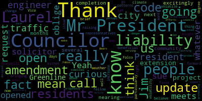
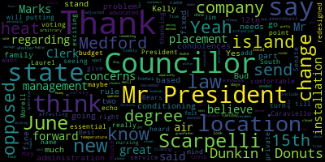
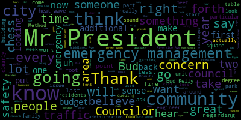
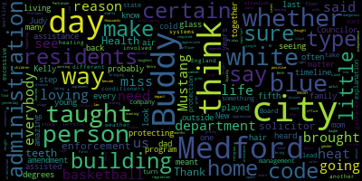

AI-generated transcript of City Council 06-15-21
English | español | português | 中国人 | kreyol ayisyen | tiếng việt | ខ្មែរ | русский | عربي | 한국인
Back to all transcripts
[Hurtubise]: of the Medford City Council to order. Will the city clerk please call the roll. Councilor Bears. Present. Councilor Falco. Present. Councilor Marks. Councilor Morell. Present. Councilor Scarpelli. President Caraviello. Present. Vice President Nye presiding. Will you all please rise to salute the flag.
[Falco]: I pledge allegiance to the flag of the United States of America and to the Republic for which it stands, one nation under God, indivisible, with liberty and justice for all.
[Knight]: Motions, orders, and resolutions. Paper 21404, offered by President Caraviello. Be it so resolved, the Medford City Council discuss the report submitted by the traffic engineer in regard to High Street. Be it further resolved, the traffic engineer and the city engineer be available to address this issue. a council Scarpelli offered an amendment requesting that the MBTA be contacted for answers and that the MBTA representatives meet with the council and committee of the whole for further discussion. Be Councilor bears off an amendment that the 710 bus be included in discussions at this meeting.
[Caraviello]: Because they run sort of together.
[Knight]: There are no objections. Paper 21407, be it so resolved, the Medford City Council go on record as informing the city administration as being opposed to the new island installation of High Street, Rubin Street, and Hastings Lane for it directly affects the public safety of the immediate area residents, bus, truck, and public safety equipment, especially in times of an emergency and extreme inclement weather. Be it further resolved, the new intersection island at the Woburn Street intersection of High Street exposes the City of Medford to potential lawsuits from any such accidents from the installation, and as such, we, the City Council, respectfully put the City Administration on notice for being opposed for making our city exposed for liability. Thank you, Mr. President.
[Caraviello]: Mr. President, this is something that's been out there for a couple of weeks now that I put on there. and disregard to the new traffic configuration at the top of High Street, Woobin, and Hastings. I lived on Hastings Lane at the top of the street for 10 years, and I know the safety issues that go up there. I lived in the house there, and when the trucks came by, my house rattled. And I don't know if anybody's gone by to see the island there. Not that I'm opposed to having an island somewhere. That is not a location where that island should be. First of all, it's narrow for trucks to traverse at the time. Route 60 is a major truck route. Gasoline tankers go by there all day and night. Be there at 2, 3 in the morning when those trucks go rolling down there in the dark. They're not going to see that, and someone's going to hit it because there's no light there on either end. Someone's going to hit it, and they're going to tip over, and you're going to see a fuel spill, similar to what we saw on the Merritt-Arlington line some years back. They spilled 30,000 gallons of fuel into the Mystic River. And I don't want to see that happen again over there. So people are saying that I don't care about public safety. The reason I have this here is because I do care about public safety. And I care about the public safety of the people that live in that neighborhood. That's my neighborhood where I live. On Sunday, the island has been hit. Sunday morning at 9 o'clock in the morning, the island got hit by a car. It had to be taken out there. DPOW had to clean up the mess. And it just started. It's only been there for three weeks. The fire chief had the fire trucks get on there, try to make the turn. He says, yes. He says the truck was able to make the turn. He says it was a little thin. He said there was only a foot of space on both sides of the road. What are we going to do in the wintertime when there's snow on the road there. And the road goes from 10 feet down to 8 feet. And those trucks, how do they make that turn? So if you read the traffic engineer's report, he wants you to go into the opposite lane and make the turn. Talk to the firemen that did the test route. Why wasn't the chief consultant on this? This is the man that He's one of our chief safety officers in the city. He wasn't even consulted on this yet. Again, it's not about the island, but it's the placement of the island. Listen. You want to have an island. The island on Woolman Street is fine. That island on High Street, it's narrow. Go down to the island by the Brooks School, much wider, and it's not on a turn. Now, when the trucks are coming up the hill, they have to accelerate to get up there. It's going to be difficult to picture. There's got to be a light, at least, on one side of that in order to break that. If not, accidents are going to continue to happen. Listen. The government makes mistakes. We make mistakes and then we do things wrong. Let's figure out what we did wrong here and try to fix it and make it right before the city ends up getting sued and before somebody gets hurt on that piece of it. And it is about public safety. It's not anything else. So thank you, Mr. President.
[Knight]: Chair recognizes Councilor Morell.
[Morell]: Thank you, Mr. President. Is the traffic engineer on the call? Do we know?
[Knight]: I can't answer that question because the council president's computer shut off.
[Caraviello]: I just have questions for them. So if they're not here, I don't have anything right now.
[Knight]: I do not see the traffic engineer on the call. Nope, sitting in there, the traffic engineer. Any other councilors have anything they'd like to say?
[Bears]: Councilor Bears. Thank you, Mr. President. Thank you, President Caraviello for putting this forward. As it stands, you know, it says as being opposed to the new island installation, I'm not opposed to an island. If we could change that to concerns regarding the placement of the new island installation, then I would be more comfortable voting for it. All right, did you get that, Mr. Clerk?
[Hurtubise]: So you want to amend it to say concerns regarding placement of the new island?
[Bears]: Yeah, so where it says as being opposed to, change that to that we have concerns regarding the placement of. I wouldn't mind seeing it redesigned, but if it's essential, it's, you know.
[Knight]: Chair recognizes Councilor Morocco.
[Morell]: Thank you, Mr. President. I'm curious if we could also request from the city solicitor just if this does, in fact, open us up to liability, if it's up to code, you know, does that open us up to liability? I mean, I know people can sue for whatever, but are we, in fact, opened up to liability if this meets the code?
[Knight]: Do you offer that as an amendment or as a B paper?
[Morell]: An amendment, if you'll oblige. Thank you.
[Knight]: Chair, wait a second. Seconded by Councilor Scarpelli.
[Unidentified]: Thank you.
[Knight]: Chair recognizes Mr. Penter at the podium.
[Penta]: Good evening, my name is Bob Penta, Zero Summit Road, former member of the Sarkis party. I would respectfully disagree with using the word concern. The fact of the matter is that an accident has already taken place. Tank has already been going down that road and coming up that road. You have MBTA buses telling you, you have a line from your own traffic consultant that tells you that a fire truck, if has to, can go on the opposite lane. You have no idea at what time of day or night that that might be happening. The whole idea, I believe, the impetus of the council president's resolution is to let this city administration know that this council is not supportive of this type of islands coming in here. You can call it part of the complete streets program, the $563,000 that the city got from the commonwealth. Where was the fire chief being consulted on that? Where was the city engineer being consulted? And all these proposed bump outs that are being planned right now, continuing down on High Street, going into the West Medford area, where's the consultation for that? Just go look at Sagamore Avenue and see the way they want to have that cutout coming out into the middle of High Street and then Boston Avenue over there. And then further down, right opposite the Brooks School, there's a gentleman who just did his driveway over and he's got a bump out in front of it. It doesn't make any sense at all. I would not change one word in the president's resolution, only for one reason. The city administration has to know that you do recognize that this is a safety problem here in the city of Medford. This isn't just for cars. This is for trucks. This is for ambulances. This is for other kinds of vehicles that are heavy duty going down there. And we're not talking about a good day, as the council just alluded to on Sunday at 9 o'clock in the morning. The gentleman, unfortunately, didn't see the island. Not only didn't see the island, he wrecked the whole bottom of the carriage of his car. What are you going to do in a snowstorm when it's dark out late at night and you have a big heavy tanker going down there? What are you going to do with a bicycle, a gentleman or a lady driving their bike down there, going in that little lane there, and you have an emergency vehicle trying to get by? You know, one thing I learned after many years of being on this council is one thing. If you know you see something that's wrong, why would you want to just smooth it over, use the word of concern as relates to telling the city administration, you're going to continue on with this complete streets program, this traffic calming issue, then the public safety is the priority. And right now it's quite obvious that it's not a priority. Correct me if I'm wrong, Council President, Fire Chief said, even though he can get by, he's only got a foot on either side. Is that what he said?
[Caraviello]: to the chair. The chief said that it was, he said he had about a foot on either side, and on Sunday at the cemetery, I talked to the people who actually drove the test route, and they said it was a little tight, but they have concerns about making that turn in the winter, when the roadway gets narrow. So that's where the concern is. And if you look down where the islands by the Brooks School is, you can see how much wider it is there versus the width on the turn.
[Penta]: I would believe that the impetus of the resolution, if you want to get to the concern that Mr. Isaac Beers has introduced, that would be something that they would once again look at to come back, okay, we'll redesign it. But you'd lose your impact by putting the city on notice that you've recognized, you've talked, this is four times in a month, you have discussed this issue and it's not going away. And the only way it's going to go away is if the city administration is aware of it and whoever their contact is with the state for the purposes of trying to make this correction, so be it. As of this Sunday, the fire chief, as of this Sunday, the fire chief still hasn't been informed. So he had to go out there and do his dry run. Well, how do you call that progress? How do you call that when somebody is supposed to sit down and let's talk about this traffic calming issue? How can it be traffic calming when you haven't even spoken to the public safety personnel who it's going to affect? You know, it isn't like you guys, young lady, are in a tough bind. It's a very simple resolution that the President has offered. as the mayor of this community and to your departments, we're putting you on notice because God forbid something happens and somebody gets killed, this council has put the city on notice. If not, God forbid something happens and you modify that resolution, you're all gonna be part of a lawsuit. And then you're gonna have to explain your way out of it. That's wrong and that shouldn't happen like that. I would suggest, Mr. President, that you do not accept the resolution to modify it. Just make it as a concern. It's not a concern. It's an issue. It's a public safety issue that demands its attention one way or the other. And if they don't want to resolve it, shame on them. At least the council's on record explaining the reason why. Thank you. Mr. President. Chair recognizes Councilor Marks.
[Marks]: their potential concerns on this area. We also did hear back from the traffic engineer and the city engineer regarding the design standards and safety standards that meet state and federal guidelines. And at this point, in my opinion, that intersection of Woburn and High was a free-for-all. a complete free-for-all. This actually makes a difference, in my opinion. It clearly defines going up or taking a right or a left. It clearly defines it now, which never existed. Now, if the issue is whether or not a fire apparatus can get there during snow time and clement weather and so forth, that's an issue that needs to be looked at and addressed. I don't think anyone doubts what former Councilor Pence is stating. And I'm hoping that's taking place. because we've addressed this on several occasions. But by no stretch, Mr. President, do I believe that this area was better off prior to the work that was done, because I do believe that work clearly delineates where you have to go now and where you have to stay and so forth. Point of information, Councilor Marks.
[Knight]: Point of information, Councilor Caraviello.
[Caraviello]: The major concern is the width of the roadway. That's the real concern, where it really narrows down to a very narrow point there. That's really the big concern that I have, that it needs some more space on both sides of it. That's the whole crux of this. Again, if someone's riding a bike and a car down there, they can't fit together. It needs to be widened a little more at some point there.
[Marks]: Right, right. And I don't disagree with you, but I'm saying at some point we have to rely on the experts and the professionals. And if they're telling us that this complies with all safety standards and so forth, I think we have to at least rely on that. But I don't know if that's fully been vetted out yet. And just because the state came in and did work there, to me, I think it at least, at the very least, requires an additional look. And that's, I think, what we've been asking for the last three or four weeks, for the city to take an additional look. Asking to take stuff down now and so forth, I don't have the expertise to do that. You know, I don't have the expertise to say take something down. What I do have is the common sense to say maybe it should be reviewed. But clearly, these type of initiatives, and I've been talking about them for 20 years, so I can't take a back step on it. Traffic calming initiatives do work in the community. And these are traffic calming issues. We may not like this one in particular or think it doesn't fit in this particular area, but these bump outs, these extending of sidewalks, these definitely make a difference when it comes to slowing traffic down. It's a known fact. It's not only happening in Medford. It's happening all over the state. across the country. So I think we have to proceed with caution on this. I support having it looked at. You're right, if it is a safety concern, I agree with you. That's a neighborhood. And if we're in fear that trucks may have a hard time navigating over there, absolutely. I think we're obligated to say that. But I'm not an engineer or a professional to say that we should start redesigning, because I don't know what a redesign would look like. That's not something that I do. So I will support the resolution, because I think it makes sense. But I'm not prepared to say that we have to take a step back and start redesigning things, because that's not in my realm.
[Knight]: Thank you. Couldn't agree with you more, Councilman Max. Chair recognizes Jared Powell. Clerk, will the clerk please unmute Jared Powell.
[SPEAKER_00]: All right, thank you. This is Jared Powell from 82 Brookings Street in Medford. I am the current chair of the Medford Bicycle Advisory Commission. I'm attending tonight largely to speak about the high street thing or provide some comments. I wanted to first thank Councilor Marks for his comments just now about how, This should represent a significant improvement to the state of affairs on High Street. I certainly agree with that. I myself am not an engineer, though I do believe that this process has been vetted by local and state officials and follows the various guidelines that are appropriate. I do think that any project could be better. I don't want to make the perfect the enemy of the good, however. We should bear in mind the pre-existing conditions of this roadway. They are intense, they are unpleasant for people on foot, for people who are biking, and frankly, for people who are driving as well. We try to, in the commission, we try to keep of those interests align and pay attention to the needs of the whole. But I do want to keep in mind that at a high level, this represents a significant improvement for the area. Any traffic changes, particularly to streets that have been the way they are for a long time, are probably going to require a little bit of learning and new driver reorientation in particular. That's certainly going to happen but we do have real problems now on that street with speed and safety and with bad behavior of drivers and frankly a lack of confusion. You know it's wide and it does create kind of a free fall you know, a free for all situation, as one of the other councilors mentioned. So I do want to thank everyone who's been working on this. I appreciate people who have been asking the tough questions and making sure that it does conform to all the standards that we want, but I don't want us to lose track of the fact that this is certainly a substantial improvement over the way things have been for a long time. Thank you.
[Knight]: Thank you, Mr. Powell. share recognizes Mr. Penta.
[Penta]: Just in response to Council max. Nobody's asking anything to be redesigned I don't think any of us have that expertise we're aware of that, but nobody came into the city and sat down with the public safety people, as it relates to all these locations that are being promulgated, and whether a review after four months I mean, after four weeks talking about this and there's still, there is still no communication with the public safety personnel of this city, which means either one or two things, either the city administration is not listening to the council, the city engineers not listening to the council. And you have a fire chief who's basically telling you, you might have a problem. You have a city traffic engineer turns around and tells you, well, if something happens, you can go to the opposite side of the street. Well, that in and of itself tells you right there, don't talk about public safety when you have a fire truck coming at you on the opposite side of the street, if an emergency exists, or if there's a snowstorm or whatever it might be. The whole idea I believe of the impotence of this whole resolution is to put the city on notice that you're not happy with the island there because it is, it has the potential to cause problems and if it's going to cause problems in an accident for which you've already had one it's already started. You know, keep us out of it. We should not be part of any lawsuit by any citizen, city of Medford or other city of Medford, because we told you this was going to happen. Maybe it might be wise, Mr. President, to invite the state in to sit down with the city council and review every one of these locations that they want to put in. How many accidents have taken place? This is the reason why we're putting it here. Where the bump boats are going and what's the reason for it? They made the determination. They don't live in the city of Medford. They're not the experts for the city of Medford. It's our city engineer and our public safety because if it's going to impede anything that they do on a daily basis, they should be primary before any decision is made. Thank you.
[Caraviello]: Mr. President. Want to be made clear. Chair recognizes Councilor Caraviello. Let me be clear, not opposed to any of the bump outs or anything like that. They're fine. I think those are all fine and great. But I say it's just that it's that width of the island there. So that's really the only concern that I have.
[Knight]: Councilor Marksley, notice your microphone's on. You all set? I'm good. All right. On the motion by Councilor Caraviello. seconded by councilor Scarpelli as amended by councilor Biaza seconded by councilor Scarpelli as further amended by councilor Morell as seconded by councilor Scarpelli. All those in favor, please say aye. Wow, that was great. All those in opposition, please say aye. Hearing none, seven in the affirmative, zero in the negative, the motion passes. Council paper 21406 offered by Councilor Marks. Be it resolved that the Medford Chess Club Outdoor Riverside Avenue Park Sunday Club meetings be discussed. A, Councilor Scarpelli offered an amendment requesting that the administration ask the Director of Recreation to reach out to this organization. B, Councilor Falco offered an amendment requesting the DPW look into the water spigots in the park to ensure they're working properly. C, Councilor Falco offered an amendment requesting the Medford Police Department increase its patrols in the area on Sundays. D, Vice President Knight offered an amendment requesting that the Recreation Department apply for determination of eligibility from the Community Preservation Committee. Councilor Marks.
[Marks]: Thank you, Mr. President. I offered this last week under suspension and therefore under our council rules, it appears the following week, we had many discussions regarding the park on Riverside Ave and the usefulness of having a chess, actually a statewide chess club, being able to, on Sundays, use that particular area. And I think, Mr. Vice President, you brought up a great point about that being recognized as a park and may require permitting and so forth. But at the time, one of the organizers, Chris Donovan, who started this roughly two years ago to attract additional foot traffic to Medford Square, came up with the idea, and there's a local Method chess club. They've been going down there ever since, I believe on weekends. And it was his thought if, you know, the old field of dreams, if we build it out to suit those who play chess, for instance, Chris sent me a number of pitches, which he sent to our director of Parks and Recreation of Stone chest tables with chairs that are fixed. So they're fixed right to the ground. There's no set up and tear down every time. It's far easier for community to put on these type of events. And the, according to Chris Donovan, the city's parks and recreations are currently looking at some fixed tables, chest tables to use that are made out of concrete or steel. They're looking at shade umbrellas because as we all know, That area is pretty wide open to the sun and is not conducive to people playing chess in the sun for any more than a short period of time. So they're looking for shade. They're also looking for, which I believe they just purchased, and I want to thank the city, two foot tall chess pieces that are family friendly. So if you're not that great of a chess player, you can go down there with your family and put around with the giant two foot chess pieces And there'll be people down there that will show you how to play the game of chess, which I think is a family fun activity for all, Mr. President. They're looking to have tournaments down there and for eventually that this be one of the recognized stops in Massachusetts for professional chess tournaments. And it's just one addition to the square, which I think would be much needed for additional foot traffic. I want to thank Chris Donovan. for his efforts on this. And I know my council colleagues agree that we believe that this would be a great asset to the square and something that, you know, provide the additional foot traffic to those businesses that have been stuck with this pandemic for the past 15 months and welcome additional people into the square. So I just want to thank Chris again and I look forward to the city moving forward over the summer with this chess club, Mr. President. Thank you.
[Knight]: Councilor Marks, thank you very much. Councilor Falco, the chair recognizes Councilor Falco.
[Falco]: Thank you, Mr. President. I also want to thank Chris Donovan for doing this. It's nice to see that space utilized for an event like this, and it's nice to see it utilized on a weekly basis. you know, that space is there and it's a perfect venue for something like this. I just wanted to, I offered an amendment last week on this too. Point number C, or point C, I guess, it's to increase the patrols in the area on Sundays. Could that just be daily? That was supposed to be daily. If there's issues at that park, we should make sure that, you know, that the patrols are increased daily, just to make sure that if there is any type of activity that shouldn't be there, that the police aren't looking into it on a daily basis. So if I could adjust it to daily, I'd appreciate it.
[Knight]: Thank you. It's certainly not a problem, Councilor Lococo.
[Falco]: Thank you very much.
[Knight]: On the motion by Councilor Marks, seconded by Councilor Caraviello. All those in favor say aye. Aye. All those opposed. Hearing none, the motion passes. Paper 21408 offered by... Paper 21408 withdrawn by Councilor Caraviello. Paper 21409 offered by Councilor Morell. Be it so revolved that the city council receive an update on the Greenland extension project from our Greenland extension community working group representatives. Councilor Morell.
[Morell]: Thank you, Mr. President. Yeah, the Greenline extension project is very excitingly. nearing completion in the next several months. And we haven't had an update in a while from our community representatives. So if we could just get a brief update from Laurel and Jim, that would be beneficial for residents. I believe they both are, either of them should be on the call right now. Let's go with Jim first.
[Knight]: Okay. I will let Clark please unmute Jim Silva.
[Jim Silva]: Hi, Jim Silva, 115 Yale Street, the Ball Square, South Medford, GLX representative, community working group. I just want to give an update on the Ball Square station at this point. First, I want to thank the council for their support in enhancing the name and recognizing the significance in the community. So thank you. Our station is 70% complete at Ball Square. The structure is in place from the bridge for the walkway support as well as the elevator is in as well. As far as the retaining walls and the noise walls are being delayed for a fourth time along the Granville Ave to the bridge itself. So there's a delay there. The community has been notified of that and aware of the delay. So because of COVID, there has been a number of supply chain issues that have taken place. So again, this is the fourth delay in that placement of the walls. Any questions? I can't hear.
[Caraviello]: If we could move on to Laurel.
[Morell]: If we could move on to Laurel, I mean, Laurel.
[Caraviello]: Laurel, Laurel Roma, name and address of the record, please. Mr. Clerk, can you unmute Laurel?
[Ruma]: Thank you. Laurel Roma, 149 Burgett Avenue. Um, let's see. So for the Medford Tufts station, well, let me just back up and say overall, the project has about 60% of the track laid for it. So in Medford, you'll have seen the track come through the ball square of South Medford station. It's not quite all the way through the Medford Tufts University stop yet. However, they're making progress. What you also may have seen in the news in last week is that this project will be delayed. So originally it was supposed to open in December, and we were really excited to give you a six month out update, but it turns out that the GLX constructors will be meeting with MassDOT's Physical Management Control Board on Monday, the 21st, to discuss how delayed the project actually will be. It's no surprise that the pandemic has thrown a wrench into a number of things, lives, everything, projects, but especially the Green Line extension. So while they were lucky to have purchased a majority of materials ahead of time, it's the actual manufacturing of the materials and then getting it to us here in Medford that is on delay. Those folks that live along the project will notice that the sound walls are not complete. The sound walls will not be complete now. They're saying it's a late August. And that we're really taking most dates as a to be determined date. As you may remember, the project itself has very strict rules that it has to be finished in December of 2021, or the contractors themselves are not just penalized a per day penalty, but they're forbidden to work on any federal contracts until they complete the project. I'm assuming that within the MBTA and the contractors, they're trying to find a solution to this issue because clearly we're not the only construction project that is delayed. However, we'll know more on Monday. The rest of the project here at Boston College Avenue or the Medford Tufts stop has been the slowest one to go. We're very far behind most of the line. If you're interested in seeing what the project will look like, mostly finished, check out Union Square in Somerville. Also, the Lechmere stop is phenomenal to take a look at. They've relocated the station quite clearly across the street, away from the old station, and the art is installed on the elevator shafts. Here at Midford and Tufts station, you'll see that two elevator shafts have been installed. Also, the platform has been poured and that is curing now. The retaining wall is up and you'll see the black wire fence along the back. The next things that have to happen are the emergency egress path has to be built along to Boston Avenue, and the pedestrian bridge from College Avenue across to Boston Avenue, where the T station is, has finally been placed. It's not permanent. It's not situated. It's definitely not open. There's a number of traffic considerations that people should be aware of in this area. College Avenue coming up from George Street to Boston Avenue is down to one lane for pedestrians, so you'll have to walk on one side of the street if you want to be a pedestrian and be safe. It's pretty dangerous right now for cyclists, so everyone should be really aware. The street has bumped out, sorry, construction has bumped out into the street, so there's no breakdown lane or sidewalk again coming up most of College Avenue. We make that right turn onto Boston Avenue, heading toward Winthrop and Tamper and Hillside Hardware. At least half of Boston Avenue is also now constrained and restricted. So there's no sidewalk access, no bike lane. So again, cyclists should be very careful as well as pedestrians in that area. The intersection at College and Boston Avenue is also restricted. So you can't get there from here. cross the intersection in a very specific way. I think that's about it for this particular station stop. Again, we'll know more about how delayed the project is on Monday.
[Caraviello]: Thank you, Laurel.
[Marks]: Senior Councilor Marks. Thank you, Mr. President. That was an excellent update and I appreciate it. My question is, the T will not open unless the sound walls are completed, correct?
[Ruma]: Um, well, yes.
[Marks]: Yes. Okay. So what's correct?
[Ruma]: No, you're right. They can't access the walls until they have to install all the walls first before the this particular phase is complete. So there will be, as far as we've been told, parts of the construction still happening once the trains are running, but most likely not the walls unless that construction is so delayed, but we're assuming not.
[Marks]: So residents that abut the tracks could rest assure more or less that the sound walls, which I know they're going to depend on, will be up when this project is underway. So that's all that's going to happen.
[Jim Silva]: That's correct. We've been notifying folks along the right-of-way in those three streets, Granville, Morton, and New Bern as well. They're well aware of the delay. They're a little frustrated by the process, but again, because of COVID, the supply chain delay has been in place.
[Ruma]: And there's also parts of the wall that are not finished along Breguet and up to Brookings as well.
[Marks]: Okay, and do we have any update on the naming of the station that would be Ball Square South Method Station?
[Jim Silva]: The only update we can tell you is what we have within the budget. It is in there. Senator Jalen included that information in the budget for the T budget for 2022, as well as in the house bill. So both of those bills are going to the governor's office after they come out of committee. Sometime in July, we'll know.
[Ruma]: Would it be helpful? It took pressure from our state officials, apologies. It took pressure from the state officials as well as the city council, as well as both mayors from Medford and Somerville, as well as other representatives in Somerville to actually have the tea. fall through with our request from 2019 to actually change the, to ensure the name of the Ball Square stations, Ball Square slash South Medford. We're really emphasizing this here because it's important as we all know for wayfaring and also to clarify that Medford does have two station stops. It's not just Ball Square Somerville, it's also Medford as well. So the, T had released a map that showed Ball Square would only be named Ball Square, and it was only with the pressure from the elected officials did it actually get into the budget, therefore advised the T to change the name to Ball Square Self-Member.
[Marks]: That's great. That pressure started largely in part because you and Jim shaking the tree. So that was extremely helpful. I'm glad to hear that it's incorporated in the budgets at the Statehouse. Just a last point, Mr. President, I know we've all stated this. I think Jim and Laurel are probably the longest serving volunteers on a project in this city. And the amount of hours, the time, the effort As you can hear, they sound like they're city employees. They sound like they're the engineers. It's really remarkable what two volunteers have done in this community, Jim Silver and Wal Ruma. And we can't say enough thank you, because if they weren't at every meeting and at the table, I think much of this would have gone unnoticed, and many of the improvements we're seeing wouldn't have taken place, Mr. President. If they weren't actively out there, and looking out for the best interest of our residents and our community. So on behalf of the council, I want to personally thank them both for their extended service on this committee, Mr. President. Thank you.
[Bears]: Thank you, Councilor Marks. Councilor Best. Thank you, Mr. President. I just want to echo Councilor Marks, Councilor Morell, and thanking you, Jim and Laurel, for your service. I think it's really exciting news for South Medford that that name change will be in the budget, both the House and the Senate. which is just great news, so thank you again.
[Caraviello]: Thank you, any further comment? And again, I'm personally, Jim Amaro, thank you very much for all you do for us, thank you again. On the motion by Councilor Morell, seconded by? Seconded by Councilor Falco, all in favor? Aye. Motion passes. 2-1, 4-1-0 offered by Vice President Knight and Councilor Falco, where is? The privately owned and operated housing development located at 99 Riverside Avenue provides 200 affordable housing units to senior citizens and disabled Methodist residents. And whereas the operations of 99 Riverside Avenue are not regulated by the Methodist Housing Authority. And whereas between June 5th and June 9th, outdoor temperatures exceeded 90 degrees, yet the air conditioning in the building was not activated by the manager. Be it so resolved that the Medford City Council authorize the city clerk to forward correspondence to the management company of 99 Riverside Avenue, requesting an explanation and citing council concern regarding public health, safety risks associated with senior citizens and disabled persons being preventably subjected to excessive exposure to extreme heat. Vice President Knight. Councilor Bacow.
[Falco]: Thank you, Mr. President. Thank you, Vice President Knight. Received numerous calls regarding this issue and would like to receive a response from the management company with an explanation, basically an explanation of what happened and a timeline as well. This is a very dangerous situation. As we know, there are many seniors that lived in that building and many people were negatively impacted by the excessive heat. And we wanna make sure of course that this is, you know, prevent it and it doesn't happen again. So I just want to get an update from the management company to actually find out exactly what happened. So if we could do that, I'd greatly appreciate it. And also we can also get a, actually if we can amend it to see what measures we're taking from the board of health with regard to the residents. I know that cooling stations, I believe were opened, but I believe it was opened They were open on the Monday after this. And if this happened on a Friday, why was there a delay? The city should have stepped in to make sure that our residents are safe. And cooling stations are great, but they need to be open. And they need to be open at hours when people need them as well. And in some instances, an instance like this, this was a really serious situation. It's a situation that's probably 24-7. Some people can't live in that excessive heat. So I would like to amend that to get more information from the airport to help. Thank you. Thank you, Mr. President. Vice President Knight.
[Knight]: Mr. President, thank you very much. And I thank you, Councilor Falco, for partnering with me on this resolution. When we think about the dangers, this is really a public safety and a public health issue, Mr. President. 200 residents, 200 of our most vulnerable residents in this community, senior citizens and disabled on fixed incomes living in public housing, who are afforded an amenity, an amenity of air conditioning that the management company is not turning on during a heat wave. It creates a concern. You know, when you go in that building and we've all been in there campaigning, we've all been in there dropping off flyers and shaking hands and meeting people, you see the population that lives in that building, Mr. President. You know, you see the ride pulling up in front and taking people to doctor's appointments. You see greater Lansing services pulling up and taking people to doctor's appointments, Mr. President. So when you look at the population that's serviced there and you look at the action or lack thereof, of our border health and ensuring that these residents are going to be provided with the amenities that are necessary and outlined in the HUD contract. I think that that's very troubling, Mr. President. And I thank Councilor Caraviello. I thank Councilor Farquhar again for partnering with me on this agenda item. And I hope that my council colleagues will support it and move forward and get some questions answered, Mr. President, because ultimately it's a head scratcher to me as to why we know that the air conditioning isn't going to be online, the cooling stations aren't open for the senior citizens that are directly across the street. So with that being said, I asked my council colleagues for the support of this resolution.
[SPEAKER_16]: Any further questions? Councilor Scarpelli.
[Scarpelli]: I think this is something that needs a little more teeth. Thank you. I think this needs a little more teeth than just an explanation from the management company. I think this is where our state administration has to take a lead, whether it's with the Board of Health, the building code, the building department, or code enforcement or the city solicitor. So I'd like to make an amendment that I think that not only through, from what I heard is that there are certain a timeline when these certain buildings, and I think that all our assisted living buildings should have some sort of protection with the city administration, whether which department to be, but my amendment would be that they would look at not just the heat, but excessive cold, that there are certain timelines when they, they look to turn these air conditioners or the heating systems on. But as you can see in New England weather and what we're seeing in different, we'll have days of 35 degrees one day, another day we'll have 90 degrees. So I think we have to have a way or we have to have an assistance here in the city of Medford where our city administration involved working with these assisted living homes where we're protecting our residents. And I think that from what I gathered, it was probably the most terrific situation where you're stuck on the fifth floor and there's no heat. I mean, there's no air conditioning that it was oppressive. So, which is dangerous for our residents. So I appreciate Councilor Falco, Councilor Knight bringing this forward, but I think we need to make, I'd like to amend this at the city administration and city solicitor's office, whether it be the code enforcement officer or the health department, that we implement a regulation that when, cases of certain heat or cold, that we make sure that by code or by law, by ordinance, that we're taking steps to make sure we're protecting our residents.
[Bears]: Thank you. Thank you, Mr. President. If I may add to Councilor Scarpelli's point, I believe the private management company had said the state law says we have to give them heat till June 15th. So we couldn't turn on the air conditioning. I think maybe I think we've heard before from this administration that they've advocated with the state to change rules that they felt were affecting safety when it came to nursing homes and COVID. I think as part of Councilor Scarpelli's amendment, they should go to the state and say, why is this based on the arbitrary June 15th and not based on the temperature at the time? You should be able to have air conditioning when it's 90 degrees or heat when it's 30 degrees, whether it's June 12th or December 12th, it doesn't matter. So I think that should be a part of this as well, is that the administration should go to the state and say, if it's not a local ordinance question and it's a state law, that law needs to be adjusted so that we're not in this situation. Because I believe the problem ended up being fixed on a Tuesday. That was four or five days of 90 degree heat until the problem was fixed. So it needs to be done in a much more timely manner going forward. Thank you. Thank you, Mr. President.
[Morell]: I want to thank Vice President Knight and Councilor Falco for bringing this forward, as well as my fellow Councilors for their amendments and particularly Councilor Scarpelli for really raising the issue of volatility in the weather. You know, one thing with climate change, we know we're going to have these more volatile patterns and also we're going to have an increase in above 90 degree days. than we historically have had. So I think as mentioned also by Councilor Bears, these arbitrary timelines or dates are really putting people in danger and not serving the people that I think perhaps they were originally designed to protect. So I support the council action on this and really appreciate the efforts to make sure we're protecting our residents.
[Caraviello]: Thank you, Councilor Morell. Seeing Councilor Baxton.
[Marks]: Thank you, Mr. President. And I wanna thank again Councilor Falco and Vice President Knight. This is common every year. We go through this every year. Some years we're lucky because we don't have a heat wave until well after the middle of June, but this year we faced a heat wave at the beginning of June, an extended heat wave. The issue to me is that whether it's a management company or whether it's Method Housing, If a temperature rises above a certain degree, Mr. President, and from what I read in the paper, that some of these units were upwards of 85 to 90 degrees. You can imagine being in a unit, 85 or 90 degrees, when you open a window and get zero breeze, Mr. President, or you put on a fan and all you're doing is blowing around the 90 degree heat in a unit, that creates heat exhaustion. And if you have comorbidities, like many seniors do, and disabled in our community, that could be a very serious combination. Very serious combination. And at the very least, Mr. President, and Councilor Farquhar will hit the nail on the head, the city was slow to operate the cooling stations. It was two days into the heat wave. that the city sent out a call saying there was the availability of cooling stations. Also, some of the cooling stations, as Councilor Falco alluded to, had hours that were, you know, bankers hours. So I guess you can't overheat at nine o'clock at night if it's 90 degrees, and you have nowhere to go, Mr. President. But at the very least, Mr. President, these particular buildings should be equipped like emergency management should be in this community, which I have to say, emergency management in this community does not exist. It's non-existent. So if we depend on emergency management during a true emergency, we're in trouble in this community. We can't even attend to one building. What should have happened is portable AC units should have been immediately deployed in that particular building. immediately. Every room should have been checked. Every room should have been checked. And if we weren't able to get the portable AC systems, they should have contacted the hotel across the street or the hotels in Wellington and put people up for the night or two nights. What's more important? It was totally mishandled, Mr. President, and it's unacceptable. and we're not prepared as a community. This is a shot across the bow for this administration and previous administrations. because it's a show of a program. When we go through our budget, and when the council sees a budget for $450 for a city of 58,000 people, Mr. President, you're going to say, what type of emergency management are you going to provide to us, to the seniors, to families? God forbid a true emergency would happen in this community. The way they address the pandemic, we hear all sorts of accolades. That should also be the way we address a situation like we had last week, Mr. President, with the heat wave. That should kick into effect with the Board of Health and emergency management. Did we hear about any emergency management? Did the residents hear about any emergency management? No, they had to wait for a newspaper to write an article. It's unacceptable, Mr. President. It really is. And this has been going on for years. It's not just this administration. When are we going to get serious with emergency management in this community? When are we going to have someone head emergency management? When are we going to fully fund it? It hasn't happened to date. And this budget is no different. Last year, apparently we had the perfect budget and we got accolades for having the perfect budget and mechanically, Maybe it was the perfect budget. Maybe it was written up and it looked great and had a great cover on it. But it's the substance that matters, what's inside the budget. And we sorely underfund emergency management. No one wants to talk about it. We sorely underfund it. And when it comes up, Mr. President, I'm going to be the first to shake the tree once again and find out why we're not fully funding emergency management, why we don't have a full time dedicated person. This is not something you give someone a $500 stipend and say, Hey, here's your hat. You're in charge of emergency management for the city. There's grant funding out there. We're not taking advantage of this programs out there that we could take advantage of. There's companies that will come in and provide services at very little to no cost. But you have to ask. You have to have someone in charge. And it's not happening in this community, Mr. President. Thank you. And I thank my colleagues for bringing this up.
[Caraviello]: Thank you. Mary Ann Broxton has your hand up. Mr. Clerk, are you in? Mary Ann?
[Broxton]: Hi, thank you.
[Caraviello]: Mary Ann, name and address of the record, please.
[Broxton]: Maryam rocks in exchange of, and I appreciate your, um, the topic of emergency management and just, I would just like to add to that. If we're talking about emergency management, we should also have an emergency room in the city. A hospital that has a functioning emergency room. As if the people that were at 99, the elderly residents that were there at the apartment building, they got heat stroke. What emergency room would they have been taken to? We don't have an operating hospital. with a hospital with an operating emergency room in the city. That should be something else we talk about when we talk about emergency management and heat. So that's it. That's my statement.
[Marks]: The council pushed to save that emergency room and it was out of our control, Mr. President. This council didn't support saving that emergency room. You are correct.
[Broxton]: Is there a way that we can bring one back?
[Caraviello]: I would tend to doubt it. You can't have an emergency room without a hospital. So unfortunately the hospital's gone and to have an emergency room that can't provide services would be a detriment to the safety of the public. So on the motion by Vice President Knight and Councilor Falco as amended by Councilor Falco and Councilor Scott Felly, seconded by Councilor Meares.
[Marks]: I didn't put mine in the form of a motion, but I'd like to put mine in the form of a motion regarding the budget and the lack of funding in this community for emergency preparedness. I'd like to get a response back from the city administration. How they're going to increase the emergency preparedness and awareness in this community. And also that if this ever happens again in this community, that portable air conditioning units, as well as putting people up in hotels, Mr. President, and public housing. or in private, Mr. President. They're making money hand over fist in these private buildings, and they should take care of their residents. So I would ask that that be part of the report as well.
[Caraviello]: Thank you. On the motion by Vice President Knight, Councilor Belco, second as, that's a B paper. So on the B paper, as offered by Councilor Locke, seconded by Vice President Knight, All those in favor? Aye. Motion passes. On the original motion offered by Vice President Knight and Councilor Falco, as amended by Councilor Scarpelli and Councilor Falco, seconded by?
[Marks]: Second.
[Caraviello]: Seconded by Councilor Marks. I'm sorry, Councilor Bears, I'm sorry. All those in favor?
[Bears]: Yes. Mr. Clerk, would you make that spot there? Company was blaming the state rule on June 15th. That's fine. Just to include the look at state law. Yeah.
[Caraviello]: Yeah. Oh, all those in favor. Aye. Motion passes. 2-1-4-1-1 offered by Councilor Scarpelli, be it resolved that the Medford City Council express its sincere condolences to the family of former athletic director, teacher, coach, and Method legend, Francis Bud Kelly, on his recent passing. Dr. Scarpelli.
[Scarpelli]: Thank you, Mr. President. When I heard this news Friday morning, it was probably one of the toughest days because Buddy Kelly's played such a positive impact in my life and thousands of other residents here in the city of Medford and outside. First to his family, his wife, Judy, who stood beside him through two bouts of cancer. and the most awful fifth stage of Parkinson's disease. And his loving children, Beth, Judy, and Linda, who were there every step of the way for their dad. From what I hear, the last few months spent every single evening with him, making sure mom had the assistance that buddy's independence required. When I say this, I say this too often, maybe it starts to sound a little corny, This is happening too often when legends are leaving us here in Metro. And I thought of Buddy the other day and yesterday when we see our city going through a pretty tough time and it's so divided. And Buddy would be the type of person, no matter what race or gender, sexual orientation, what religion, your height, your color hair, or if you had no hair. He's the type of person that would find that bond to bring everybody together. And that's what I think we miss here right now in this community. And what I'm talking about is if you grew up in Medford and if you didn't grow up in Medford, you should learn about this because Buddy taught me some important lessons in life. I learned them in my home about loyalty and commitment and pride. And that's in your home. That's instilled in you by your mom and dad and your family, you hope. But Buddy taught you outside the home is what it all meant to be in Medford Mustang and be, and as he would say, blue and white, blue and white. And how that blue and white flow through your veins, no matter who you were. And it was funny as I read posts and talked to alumni and, you know, Krista McCormick, a legendary basketball player, captain of UMaine when I played professionally, she called us and she sent the message and said, But he was so amazing that he was the person back in the day that said to the girls' basketball program, to the boys' basketball program, hold on a second. The boys don't get the glass. The girls can shoot on that same glass the day before game day. So he changed the rule. And he made sure that everybody felt comfortable in Medford High School. He had his own way, but his way was the Mustang way. He brought everybody together. And I'm going to miss him greatly because he did instill in me as a young coach and a young man what it was and why we live in the city of Medford. Because truly, whether you're here a day or whether you're here for 35 years, you're here for a reason. You moved here for a reason. You're brought here for a reason because you love the city of Medford. And if we can get back to what Buddy taught us for so many years and taught so many people that let the blue and white overcome everything else. And you could see amazing things happen. Like I said, last couple of nights, I've been thinking about buddy and seeing what our city is going through. And that analogy just came to me because it really meant a lot to me. That's the type of person that brought me into coaching. That's the type of person that when you sit in a locker room with my teams, that it wasn't about the win or the loss. It was about being a Mustang. and loving the blue and white and loving the city. And somewhere along the line, we forgot that. And I'd be remiss to say that if it wasn't for Buddy Kelly, I don't know if my life would ever be the same. He taught me so much and I'm gonna miss him forever.
[Caraviello]: Thank you. Councilor Besser.
[Bears]: Thank you, Mr. President. I certainly couldn't say anything better than what Councilor Scarpelli just said. Send my condolences to you, Councilor Scarpelli, and also to Bud Kelly's family. My sister and I went to Medford Public Schools with Haley and Kelly Carr. Bud was their grandfather. So just send my condolences to the whole family on this loss of a great Medford resident.
[Knight]: Thank you, Councilor Villescaz. Vice President Knight. Mr. President, thank you very much. I can't remember a time in my life that Bud Kelly wasn't a part of it. uh, his nephew, David and I were best buddies. We met the first day of school in first grade. And, um, throughout high school, I had the opportunity to work in buddy Kelly's office at this great thing meant that I had, it was called office assignments. And, um, every fifth and sixth period for my junior and senior year, I spent that in Mr. Kelly's office, uh, working with him, putting together the athletic schedules. Not really. Um, it was more or less collecting equipment and making sure it was clean and, uh, you know, counting jock straps and shoulder pads. So it was really what we did, but, um, but it was a great guy and, um, I wouldn't have gotten through high school if it weren't for buddy. Um, I played lacrosse at Medford high and, uh, throughout my four years at Medford high, we had four different coaches and every year they tried to eliminate the program. And, um, I'd always go into buddy's office and I. Begging plead for him not to eliminate the program. So it'll be a keep lacrosse program alive for another year. And, you know, we still have that program today. And it was because of Buddy. Buddy, listen, listen to the kids. Tried to provide a service, but he was a great man. He was a great coach, Baldwin Catholic High School, Hall of Famer, Manfred High School, Hall of Famer. Someone who always spoke about the blue and white, but it was always a little secret that he kept that he was actually a Baldwin Catholic graduate. You know, his sister, Patricia and Brenna Deck, the twins, very close friends of the family. And I just want to offer them my condolences. It was a very tough, tough way to go this evening. And I stand by my council colleagues and in all the time words that they have about Mr. Kelly, because every single one of them is true. Thank you, Mr. President. Senior Councilor Marks.
[Marks]: Thank you, Mr. President. I want to thank Councilor Scarpelli for his putting this on the agenda and for also his personal words because I think his tribute really struck home with me. Knowing Bud, you know, Bud was a friend to everyone. I had him a teacher when I was at the high school. He was my teacher. You know, I didn't play any sports under Bud. I actually wrestled for Method High School, but he was the athletic director and he cared about every program. And he cared about every kid individually. And he had a relationship. I don't know how he did it with every kid. And we all respected him. And he was tough as nails when he had to be. And he let you know that he was there. And if you did something wrong, he let you know about it. But he also had a side that was very sensitive. And Bud was truly a great family man. His wife, Judy, we used to joke around, come around this time every July. His wife and I would meet, and we used to meet at Stop and Shop around the cherries that came out every July, and we'd be the first in the cherry section, and we'd pick through all the cherries because we were cherry fiends. And we used to laugh about it. And they're just a great couple, Mr. President. Bud, I think, would be the first to lend a hand, as Councilor Scarpelli mentioned. If he needed something, he'd be there. He'd be the first to help you out. He'd be the first to extend himself. He'd be the first to go to bat. And, you know, that's what I remember about Bud Kelly. And you're absolutely right, my council colleagues, all three of that. You know, as we lose people of this character, people that made the city what it is, Mr. President, it truly is not just the loss of someone, it's the loss of, you know, a feeling in the community. It's the loss knowing that someone has your back. It's the loss of having someone that is there with your best interest. And I think as we lose people like that, we really lose a part of the community. And I'm hoping that we start to build that camaraderie. We start to build that sense of neighborhood, that sense of belonging. And that's what, you know, I think Bud instilled how he acted in this community. It really was a sense of pride. And if you didn't go to the Thanksgiving football game, let me tell you, especially in the high school, you weren't getting an A or B anymore. You had to go to the game and he used to take attendance, believe me. And the crowds were huge because of Bud Kelly and because of the spirit and the pride that Bud Kelly had, Mr. President. And you're absolutely right. The blue and white, I don't think you can meet someone that had more blue and whites with their veins. Um, and he will be sorely missed. I, I feel awful, uh, for, uh, Judy and, uh, Beth and, um, uh, Linda and, uh, you know, the rest of the family, um, including the son-in-laws and so forth. Uh, because Bud was an excellent husband, father, grandfather, friend, coach. You name it, he excelled at everything and found the time to do so. And he will surely be missed, Mr. President. I ask, I know my colleague would want it, that we name Bud Kelly, dedicate this meeting after Bud Kelly in all his years of service, Mr. President. Thank you.
[Falco]: Thank you, Mr. President. I had the honor to play football for Bud Kelly from 1985, 1986, and 1987. And I remember as a sophomore coming to Medford High School and being on the varsity team, it was quite intimidating. You had a lot of juniors and seniors that played. It was a great team in 1985. He was the head coach. But coming in as a sophomore, everyone at this council was really hit upon it. It was family. You came in, it didn't matter where you came from. It didn't matter who you were, you were family. And he preached that repeatedly. And it was about, you know, family, loyalty, being together, having fun, but also being serious too. When he had to be tough, he was tough, but he was fair. He was fair with everyone. It was probably one of the, You think about, you know, you play sports, you're part of clubs or groups. And it was probably one of the most fun moments of my life, you know, young life growing up, being 15 years old and being part of that. And, uh, you know, he was the last coach to win a GBL title in football. It's been quite some time. It's been, uh, almost 30 years now, actually more than 30 years. Uh, but he was, uh, he was, you know, I remember seeing him after graduating and going to high school games, you'd see him as the AD then. And, uh, He was just a great guy, always a good friend, and someone who could really make you laugh. And, you know, he was a great family man. I remember those games in 1985. After we won, we'd always drive through Medford Square, pull up on the bus, and I think his wife worked at the dress shop right behind City Hall. And he'd stop the bus after every win, and everybody would be singing the Mustang Spice Song, and traffic would come to a stop. And literally he'd get out of the bus, he'd run across the street, his wife would come out and everybody that worked at the shop and he'd give his wife a kiss. And then he'd come back onto the bus and we'd make our way to the high school. And, uh, you know, it was just a really fun way to celebrate a victory. He was a great family man. And, uh, there was a lot of pride there in blue and white. If you play Mustang football, blue and white was running through your veins. If you played any sport, blue and white was running through your veins and he would preach that repeatedly. And, you know, the community is, this is a big loss to the community. And my, you know, thoughts and prayers and condolences go to the Kelly, to Judy Kelly and the family. And he will, he will be missed.
[Caraviello]: Thank you. And on behalf of myself and my family, I knew Bud for many, many years. He, I had the opportunity to get to know him on a different level because he coached with my uncle for many, many years. Councilor Marks is right. Thanksgiving Day, God couldn't get into the home of the stadium. He didn't have a ticket. Sold out every year for many, many years. And he used to chastise me because I didn't play football. He says, big guy like you. He said, I want you on the team. I did play one year as a freshman year, but that was about it. But I knew Bud for many, many years. And he was part of the Super Bowl winning staff there. I think there's only one person left, that whole Super Bowl coaching staff. And like Councilor Scott probably said, men and women who have blue and white in their veins, they're dying quickly. And they're not, people just aren't stepping up to the degree that those people did. and there's a void in the community when another person passes on. So again, to the Bud and his family, my condolences. So if we could rise for a moment of silence, please. Mr. Clerk, could you please call the roll?
[Hurtubise]: Councilor Bears. Councilor Falco.
[Falco]: Yes.
[Hurtubise]: Vice President Knight. Yes. Councilor Marks. Yes. Councilor Morell. Yes. Councilor Scarpelli. Yes. President Caraviello.
[Caraviello]: Yes, I'm in favor of the motion, passes. Communications from the mayor. 21412, dear President Caraviello and members of the city council. On behalf of the below entities, I respectfully submit to the Medford city council the following requests for a food truck locations in the city of Medford. One, the sausage guy. Dates and times, June 25th, 2021, 7 p.m. July 10th, 2021, 7 p.m. July 17th, 2021, 7 p.m. August 6th, 2021, 7 p.m. August 13th, 2021, 7 p.m. And the location, it would be at Hornbill Stadium. Are you here from the Sausage Guy? No. No. I'm here for the Boston Glory, the team that played
[SPEAKER_14]: and we're trying to get the sausage guy on board. Name and address of the director, please. Sure, Jason Tallerman. I'm the part owner and the director of operations for Boston Glory that has rented the facility for the spring and summer. Give us a little brief description of what Boston Glory is. So Boston Glory is a professional ultimate frisbee team. We've been practicing since March. Well, there we go. So we've been practicing since the spring. We were going to have our inaugural season last year, got delayed obviously. And we were, we started up this year, had our first home game this past Friday, had 600 fans, happy fans in there. It's a pretty successful 22 team national league. We're the newest entering in the league. Boston has a rich history of ultimate Frisbee with multiple national championships at a club and college. level. We're pleased to bring a product here to the city. Hormel has been terrific to us, the staff at Recreation at the Hormel Commission, Licensing Commission we're working with, Recreation, Mayor's Office, everyone's been incredibly welcoming. And a couple more pieces to the puzzle, we're meeting with the licensing commission next week to get a local brewery that can serve beer for us on a series of one day licenses. And the last piece of the puzzle would be to get some limited food service inside the gate so that we could serve our fans and have more fans and then have those more fans then either do pre-game or post-game in Medford's wonderful restaurants in the square and beyond. Excellent, excellent.
[Caraviello]: Thank you.
[Knight]: Questions for the gentleman. Mr. President, I actually had the opportunity of speaking with Mr. Tallman earlier, having some familiarity with the ongoings at Hormel Stadium in the rental of the fields. The history of Ultimate Frisbee in Medford is actually pretty strong and pretty proud. Just a couple of years ago, I do remember the Boston Whitecaps, I think was the name of the team that was competing in the national championship and were actually on ESPN's top 10 at Hormel Stadium. So they certainly do bring some interest to the area and certainly some bodies to the region. And I, for one, have no concerns supporting the Sausage Guys, Sausage Cat down at Hormel Stadium for these dates that have been selected. So with that being said, Mr. President, I certainly would move for approval on item one. Thank you.
[Falco]: Thank you very much. Thank you for your presentation. Quick question, you said there were 22 teams in the league? 22 teams in the league. And where are they from?
[SPEAKER_14]: All over the country. So there's three teams, two teams in California, as far south as Florida and Texas. Minnesota, Chicago, Detroit, pretty much all the major hubs. So Boston was their last piece, Seattle, Boston, they've wanted a Boston team since the former league folded. And we got a couple of investors, including myself, and here we are. Great.
[Falco]: And how long is your season? How many games do you play at home?
[SPEAKER_14]: So normally we, the season stretches from the spring to the mid-summer, but because of COVID, we're now playing throughout the summer. So we'll be at Hormel through August. And if we make the playoffs, maybe one game beyond that at Hormel, if we have a favorable record.
[Falco]: Okay. And I'm sorry, how many, how many games do you play?
[SPEAKER_14]: We play 12 total regular season games. And then there's playoffs after that.
[Falco]: It's pretty exciting. Thank you very much. Thank you. What I've seen before is that a city clerk is an ultimate frisbee. Perfect. Our own professional, I guess.
[Hurtubise]: I've been playing in a pickup league that's been in existence up at Carr Park for more than 30 years. I've been playing with them for nine. You might have to take five of our teams to scrimmage once. Scrimmage against yours, that might give us some sort of advantage if we had five teams and you had one. But as you know, you know how much fun it is.
[SPEAKER_14]: It's a hard game to stop. I've been playing myself since 85. I'm now in the over 50 division. I'm a national and world champ at that division. Congratulations. What's that? Got a ring? I don't have a ring. I got a trophy at home.
[Caraviello]: Okay, so we wanna vote on these separately. We have a second one here. Is the petitioner here for the second application? Yes, the Dunkin' Donuts is here for the second one also.
[SPEAKER_14]: Thank you. Hey, thank you so much. I appreciate it. Hope to see you all at a game. Thank you. Yeah, thank you.
[Caraviello]: Number two, Kefauver Management Company, LLC, Dunkin' Donuts location. Start dates expected June 28th, 2021, 283 Middlesex Ave, Medford, August 2nd. 2021 7 Commercial Street, Medford, and 283, 283 Mystic Avenue, Medford, and 7 Commercial Street, Medford. I see the representative of Declan Donovan is here. Name and address of the record, please.
[_tT-sIarT8Q_SPEAKER_04]: Hi, Emily Fitzgerald, 280 Merrimack Street, Methuen, Massachusetts.
[Caraviello]: Can you give us a little brief update on what's going on and how long you've been needing these trucks for?
[_tT-sIarT8Q_SPEAKER_04]: So during those two weeks listed, we will be remodeling those Dunkin' Donuts locations to the next gen image. We like to use our dunking cart to make up for a loss of sales and hopefully not any loss of customers. We've had much success using this cart in other remodels in New York and Maine, and we are hoping to keep it going with a limited menu and limited hours. So we're hopeful.
[Knight]: Okay, question to the petitioner. Vice President Knight. I'm not understanding this, so would it be located at the physical location of the store, just outside? Yes.
[_tT-sIarT8Q_SPEAKER_04]: Yes, so it's a cart, it's more of a trailer, it's enclosed, and then that's where the coffee and muffins are served to the customers. and it's just going to carry on just like a drive-through. The stations are positioned within the drive-through in the parking lot, so the traffic flow is the exact same. You come in, you stop at the tent, you order, you pull up to the cart, you get your coffee, your donut, whatever it may be, and you exit.
[Knight]: Do you have an existing drive-through window at this location presently?
[_tT-sIarT8Q_SPEAKER_04]: Yes.
[Caraviello]: I think Middlesex Avenue. And commercial street as well.
[Knight]: So I get the people to go inside the restaurant to go to the drive-thru.
[Caraviello]: They're gonna be remodeling inside the restaurant. Remodeling? Yes.
[Knight]: Yes.
[Caraviello]: Do you know how long you'll be remodeling each location?
[_tT-sIarT8Q_SPEAKER_04]: Yes, each remodel is two weeks. The cart runs Monday through Friday only, both of those two weeks.
[Caraviello]: Two weeks at each location?
[_tT-sIarT8Q_SPEAKER_04]: Correct.
[Caraviello]: Will these be going on simultaneously? are at different times.
[_tT-sIarT8Q_SPEAKER_04]: I'm sorry, say that again.
[Caraviello]: I said, well, the construction won't be going on at all these locations simultaneously or you're gonna finish on and then.
[_tT-sIarT8Q_SPEAKER_04]: No, we are starting with the Middlesex Ave location tentatively June 28th. And then on August 2nd, we intend on starting seven commercial street.
[Marks]: Okay.
[Caraviello]: All right. Senior Councilor Baxton.
[Marks]: Thank you, Mr. President. So the lot on Middlesex Ave is quite a large lot. So I could see that working on Middlesex Ave. The lot on Commercial Street is a very difficult lot to get in. And I can only imagine during construction, I was just wondering if you can lay out what the plans are. You said there's a tent and you know, they're going to be able to access through the tent and drive through. Can you just explain, are they going to use the existing drive-through even though it's closed as a way to go in and out of that very small lot? Can you just explain how it's going to work?
[_tT-sIarT8Q_SPEAKER_04]: They are going to pull in the entrance as they normally would to enter the drive-through. The tent is set up right over the drive-through lane where they pull up, they enter and order through our employees and they pay under the tent, or I'm sorry, next to the tent. The employees stand underneath the tent just for rain and shine. Then they pull up to the cart and there's an employee standing there with their beverage, which is located right again in the drive-thru and they exit.
[Marks]: Right. So part of my concern, Mr. President, and I know they're actually working on the Dunkin' Donuts on the Fellsway right now. It's been closed for I believe two days. But part of my concern is when this duck and donuts originally went in, there was some grave concern about the queuing up of cars that are going through the drive-through. And the reason that was raised is we all know that engine four is next door. And believe it or not, it's not unheard of. I live in the area. that on certain days, you'll see the cars queuing up onto Commercial Street and out onto Riverside Ave, and not far from the entrance to the fire station. My only concern now is you're gonna be backing up where cars are gonna be coming in. The tent will be right where the entrance is, I assume where the doors are, and you're gonna be backing up cars queuing onto Riverside and Commercial. And depending on the flow and so forth, I have some concern, Mr. President. Is this something that has been run by public safety officials in the community?
[_tT-sIarT8Q_SPEAKER_04]: No. Not on my behalf, no.
[Marks]: I would just respectfully ask, I'm not opposed to what they're trying to do, Mr. President. I just want to make sure it makes sense. Like I said, this is a much smaller lot than Middlesex Ave. Middlesex Ave can accommodate, you know, the big Apple Circus there under a tent and so forth. But Commercial Street is a congested lot. There's no access from Riverside Ave into their lot, either come into Commercial. Getting in and out of their lot inherently is difficult already. and I'm sure you would know as someone that's involved with that Dunkin Donuts, I just wanna make sure. So I would ask that approval be conditioned upon getting approval from both the fire and police chief that they don't anticipate any concerns with public safety regarding access to our fire trucks getting in and out of engine four and also safety with the president of vehicles queuing up potentially onto Riverside Ave. So that would be my recommendation, Mr. President.
[Caraviello]: Thank you. As amended by council member. Council member.
[Falco]: Thank you, Mr. President. A quick question. I believe, did you say there were abbreviated hours? Yes. Okay. Can you just elaborate on that? Is it the same hours for each location or does each location have different hours?
[_tT-sIarT8Q_SPEAKER_04]: Typically we run the cart from six to two in the afternoon.
[Falco]: That would be the same for both locations. Okay, so 6 a.m. to 2 p.m. for both locations for the duration of the remodel? Correct. I apologize, did you say the remodel was going to be two weeks?
[_tT-sIarT8Q_SPEAKER_04]: Yes.
[Falco]: Okay, thank you. Councilor Morocco.
[Morell]: Thank you, Mr. President. Councilor Fabio asked my question, so I'm all set.
[Bears]: Thank you, Mr. President. How many Dunkin' Donuts locations does your management company operate or own?
[_tT-sIarT8Q_SPEAKER_04]: Entirely?
[Bears]: Yes.
[_tT-sIarT8Q_SPEAKER_04]: Just shy of 300.
[Bears]: Okay. And you have, you know, two locations within a pretty reasonable distance from the locations you're going to be remodeling. Why not just send customers to the next closest location that you are owning?
[_tT-sIarT8Q_SPEAKER_04]: It's really just to try to keep our customers on their same daily patterns. And, you know, the customers that you go to Dunkin' Donuts on Middlesex every day, because that's the one you pass. You don't pass the one on, say, Fells Way or whichever other road. That's really, it's just to keep the same customers coming to the same location.
[Bears]: Yeah, I personally am not in favor of this. I think you could say Down the street is our Felsway location. We'll be closed for two weeks. And if you own hundreds of Dunkin' Donuts, it doesn't seem like it would hurt the bottom line that much to me. So that's where I stand on this. Thank you.
[Caraviello]: Thank you.
[Knight]: Vice President Knight, I'm somewhat in line with what Councilor Bears is saying. I mean, I just don't like the precedent it sets, and I don't really feel as though it falls in line with the intent of a food truck pilot program. You know, we were talking about food trucks, we were talking about, you know, having the ability to, you know, bring the sausage guy to Hormel Stadium so that someone could have an event. And I really think that, you know, remodeling the business, that's a cost of doing business. And I think that the public safety concerns are going to outweigh, you know, the benefits that they're going to provide to the community, number one. And number two, because it doesn't seem to really fall in line with the intent of our food truck ordinance, I'm going to have a difficult time supporting it this evening. Thank you, Vice President.
[Caraviello]: Ma'am, are you going to be offering the same menu that you have in your stores, or will they be cooking under the tents?
[_tT-sIarT8Q_SPEAKER_04]: It's a limited menu. No cooking. It's strictly hot coffee, coffee, iced tea, bottled water, and donuts.
[Caraviello]: Thanks.
[Marks]: Move approval, Mr. President.
[Caraviello]: So on the motion by City Council Marks.
[Marks]: As amended. As amended. Mr. President.
[Caraviello]: Are you going to sign off?
[Bears]: I request that we vote on the sausage guy and the Dunkin' Donuts separately, please. That's fine.
[Caraviello]: Okay. On the motion by Council Mears that we sever this. All in favor, aye. Aye. Aye. Okay, so the first one is the sausage guy. with the dates and times that have been mentioned. Vice President Knight has moved for approval. Seconded by Councilor Mayes. All those in favor? Aye. Motion passes. On the capital management, on the motion by Councilor Marks, seconded by Councilor Scarpelli.
[Marks]: With the condition, Mr. President, Duncan Donuts receive a sign off from both the chief of police and the fire chief regarding any potential safety concerns.
[Caraviello]: Okay, all those in favor. Aye. The chair seemed to be in doubt. Mr. Clerk, please call the roll.
[Hurtubise]: Yes. No. Yes. Councilor Marks? Yes. Councilor Morell?
[Morell]: No.
[Hurtubise]: Councilor Scarpelli?
[Caraviello]: President Caraviello? Yes. Four in the affirmative, three in the negative. Motion passes. Thank you. Thank you very much. Okay. Reports of committees. 2-1-3-8-7, June 8, 2021, Committee of the Whole. This is a report, this was the Water Board report that was reported out favorably and is eligible to take its first reading this evening. We have to vote the paper out first, Vice President Knight. The motion that we vote this paper out by Councilor Knight, seconded by second by by Council box. All those in favor. All right. Well she passes on the motion that we allow this payment taken the first reading by Vice President night second invite to make house to scrap. This is the money paper. Mr. Cook please call the roll.
[Hurtubise]: Councilor Bears. Yes. Council Falco. Vice President night. Yes. Council marks. Yes. Yes. Councilor Scarpelli.
[Caraviello]: Yes. President Caraviello. Yes, I'm in the affirmative, motion passes. 21403, June 9th, June 12th, Committee of the Whole report. This is on our budget. The budget is ongoing and we're meeting again on Saturday to further discuss the budget. On approval by Vice President Knight, seconded by Councilor Bears. All those in favor. Aye. Motion passes. Public participation. Thank you, we don't see anyone here. The records. Records of the June 8th, 2021 meeting were passed by Vice President Knight.
[Knight]: Mr. President, I find the records in order and move approval.
[Caraviello]: That's for next week. The motion by Vice President Knight, seconded by Councilor Bears. All those in favor? Motion passes. Motion to adjourn. Motion by vice president Knight, seconded by council to adjourn. All those in favor? Aye. Motion passes. Meeting adjourned.
Falco
total time: 5.99 minutes
total words: 1115
|
Knight
total time: 8.86 minutes
total words: 1639
|
Caraviello
total time: 14.83 minutes
total words: 2195

|
Morell
total time: 1.57 minutes
total words: 306

|
Bears
total time: 3.49 minutes
total words: 615

|
Penta
total time: 6.44 minutes
total words: 1287
|
Marks
total time: 21.64 minutes
total words: 3435

|
Scarpelli
total time: 6.2 minutes
total words: 1026

|
|
|
|
|
|
|
|
|
|
|
Back to all transcripts
{kind=link}
{kind=link}
{kind=link}
{kind=link}
{kind=link}
{kind=link}
{kind=link}